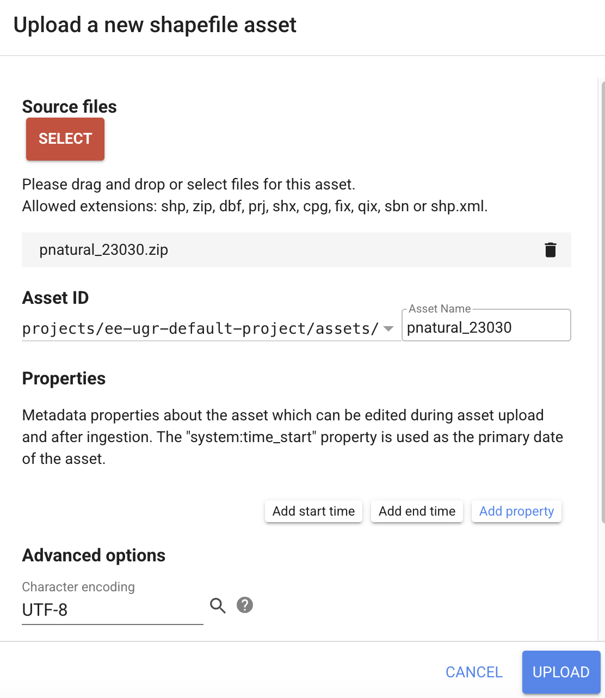
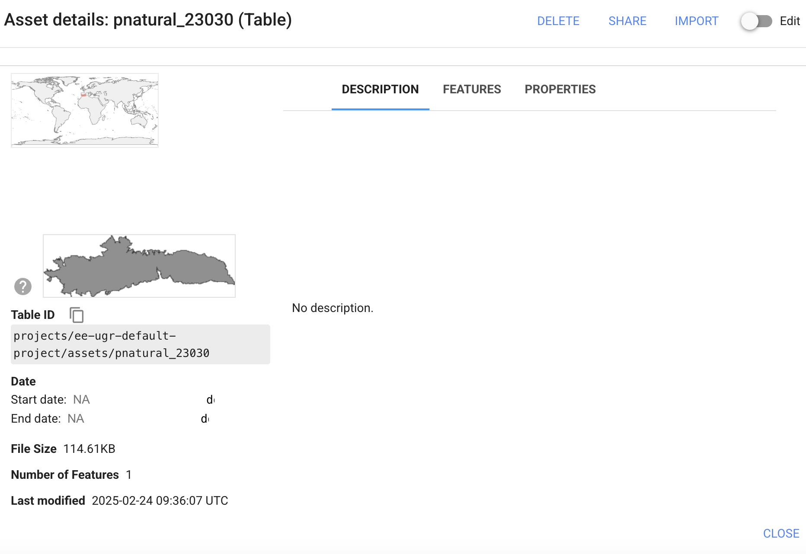
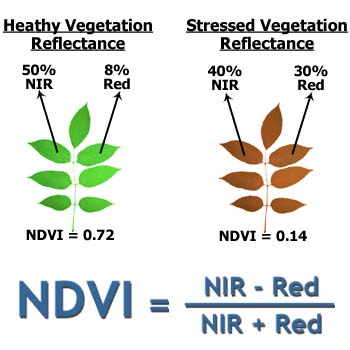

Analyzing trends in time series of vegetation indices using Google Earth Engine
![]()
Objectives
The general objective of this session is to create a map that shows the map of photosynthetic activity of Sierra Nevada Natural Park (PNSN) vegetation cover over several years.
We will work with the NDVI (Normalized Difference Vegetation Index).
The NDVI index is considered as a good surrogate of primary production.
GEE Workflow
- Open Google Earth Engine code editor and login with your user name.
Since GEE contains information for the whole planet, we firstly define the area of interest. The example below considers that the area of interest is Sierra Nevada protected area.
Import the Area Of Interest
- Import the limit of the Area Of Interest (AOI): you can use this zipped shapefile that comprises the borders of Sierra Nevada protected area.

- In order to import the shapefile, just follow these steps:
- Assets-> New -> Table upload -> Shapefiles.
- Select all files called pnatural_23030.
- You can also upload the .zip file containing all the files belonging to the shapefile.
- Add a name for the newly created asset: pnatural_23030
- Press Upload. After some seconds, a new asset will be created.

- Check the properties of the asset by clicking on it.

- Add pnatural_23030 geometry as the study area.
Remember to change the name to your GEE project!
var aoi = ee.FeatureCollection("projects/ee-cloudprojectname/assets/pnatural_23030");
Map.centerObject(aoi,10);- We will add another study area defined by the vertices of a polygon:
// Construct a polygon from a list of x,y coordinate pairs defining a boundary.
var bb =
ee.Geometry.Polygon(
[[[-3.720588870122794, 37.29804352232595],
[-3.720588870122794, 36.833422775627135],
[-2.536812014654044, 36.833422775627135],
[-2.536812014654044, 37.29804352232595]]]);
Map.addLayer(bb,{},'Bounding box');
Map.addLayer(aoi,{},'PNSN');Remember to save your script regularly!
We have used the following functions:
ee.FeatureCollection (see documentation) can contain geometrical objects. In this case, we have used it to contain the limits of Sierra Nevada protected area.
Map.centerObject (see documentation) sets the extent of the view and zooms into our area of interest (we will see Sierra Nevada when executing this line).
ee.Geometry.Polygon(see documentation) constructs an ee.Geometry describing a polygon.
Map.addLayer (see documentation) shows the maps.
Load Landsat-5 collection
- We will use the function ee.ImageCollection to access all the time series pertaining Landsat 5.
- We will use the product called LANDSAT/LT05/C02/T1_L2 to compute the NDVI.
- All the images existing in the above mentioned datasets will be stored in the variable called
l5collection. - We will also filter all the images by area (using filterBounds) and by year (using filterDate).
- First, we define a maximum cloud cover threshold of 20% to select images with less cloud interference.
// Cloud cover threshold
var cloudCover = 20;We will select all available scenes from 2005 to 2011:
// Load landsat 5 dataset. Filter by "aoi" and time:
// For different dates: L7 (LANDSAT/LE07/C02/T1_L2)
var l5collection = ee.ImageCollection('LANDSAT/LT05/C02/T1_L2')
.filterBounds(aoi)
.filterDate('2005-01-01', '2011-12-31')
.filterMetadata('CLOUD_COVER', 'less_than', cloudCover);
print('l5collection',l5collection);Calculate NDVI
- normalizedDifference computes the following operation for bands B3 (red) and B4 (infrared): \(NDVI = ( B4 - B3 ) / ( B4 + B3 )\)
- The obtained result will be stored in a new band called
NDVI - The algorithm is “stored” in a function called
getNDVI

// Calculate NDVI
var getNDVI = function(img){
return img.addBands(img.normalizedDifference(['SR_B4','SR_B3']).rename('NDVI'));
};Nothing new happens!? We have just created a new function (getNDVI), but we have not used it yet!
Use a loop to calculate NDVI for each image within the image collection:
- The funciton map is a very simple way to create loops in GEE:
- It allows to apply a function (e.g.
getNDVI) over a collection (l5collection).
- It allows to apply a function (e.g.
- The result is stored in a new collection called
l5ndvi - When using this function, GEE adds a new band to each image called
NDVI
- The funciton map is a very simple way to create loops in GEE:
// Loop over image collection: calculate NDVI for each image in the collection
var l5ndvi = l5collection.map(getNDVI);
print('l5ndvi',l5ndvi); Check if the new band has been created!
Time series plot with the mean value of each scene for the whole PNSN

print(
ui.Chart.image.seriesByRegion({
imageCollection: l5ndvi.select('NDVI'),
regions: aoi,
reducer: ee.Reducer.mean(),
scale: 30,
xProperty:'system:time_start',
seriesProperty: 'NDVI'
}).setOptions({
title: 'Mean NDVI PNSN',
vAxis: {title:'NDVI'},
hAxis: {title:'Fechas'},
curveType: 'line',
pointSize: 3,
lineWidth: 1
})
);Non-parametric Mann-Kendall test to detect a trend in a series of pixel values.
// First, we need to generate a single image with the different NDVI scenes as bands
var ndvi_image = l5ndvi.select('NDVI').toBands();
print('ndvi_image',ndvi_image);
var ndvi_trend = ndvi_image.reduce(ee.Reducer.kendallsCorrelation());
print('ndvi_trend',ndvi_trend);- Visualizamos los resultados (tau) del test de Mann-Kendall:
- Los valores negativos indican una tendencia a la baja y los positivos, una tendencia al alza.
var vis_params_tau = {"min": -0.5, "max": 0.7, "palette": ["red", "orange", "yellow","white", "green"]};
Map.addLayer(ndvi_trend.select("tau").clip(bb),vis_params_tau,'Tau');Temporal composite containing the maximum/minimum/mean NDVI values per pixel during the study period
- We will combine spatially overlapping images into a single one based on an aggregation function (see ImageCollection Reductions).

// Maximum value (yearly maximum of each pixel):
var composite_max = l5ndvi.select('NDVI').reduce(ee.Reducer.max()).rename('NDVI').clip(aoi);
// Alternative: var composite_max = l5ndvi.qualityMosaic('NDVI').clip(aoi);
//print('composite_max',composite_max);
// Mean value (yearly mean of each pixel):
var composite_mean = l5ndvi.select('NDVI').reduce(ee.Reducer.mean()).rename('NDVI').clip(aoi);
// Minimum value (yearly minimum of each pixel):
var composite_min = l5ndvi.select('NDVI').reduce(ee.Reducer.min()).rename('NDVI').clip(aoi);Visualize the results
- We will first create a variable called
ndviPalettethat contains 17 hexadecimal numbers, each of them corresponding to a specific color.- A palette is a comma delimited list of colors which are linearly interpolated between the maximum and minimum values in the visualization parameters.
// Visualize NDVI
var ndviPalette = ['FFFFFF', 'CE7E45', 'DF923D', 'F1B555', 'FCD163', '99B718',
'74A901', '66A000', '529400', '3E8601', '207401', '056201',
'004C00', '023B01', '012E01', '011D01', '011301'];
Map.addLayer(composite_min.select('NDVI'),
{min:-0.1, max: 0.5, palette: ndviPalette}, 'NDVI min.');
Map.addLayer(composite_mean.select('NDVI'),
{min:-0.1, max: 0.5, palette: ndviPalette}, 'NDVI mean');
Map.addLayer(composite_max.select('NDVI'),
{min:-0.1, max: 0.5, palette: ndviPalette}, 'NDVI max.'); Export/Download the composite image to a raster file
The last step of this workflow within GEE is to export the image to a
.tiffile on your Google Drive.The function Export.image.toDrive allows us to export the band
NDVIfrom the imagecompositeto a .tif file called “ndvi_mean”.You can specify the file format, the coordinate system and other properties of the exported image.
// Export to image
Export.image.toDrive({
image: composite_mean.select('NDVI').rename('NDVI_mean'),
description: 'ndvi_mean',
scale: 30,
region: aoi,
fileFormat: 'GeoTIFF',
crs: 'EPSG:23030'
});When excecuting this function, a new task will appear in the corresponding tab. You must click on Run!
Then, a new window will appear that lets us change the name of the image and the destination folder in our Google Drive account, where it will be saved.